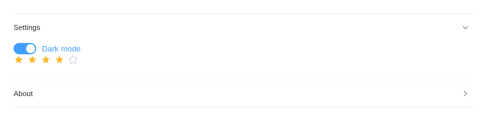
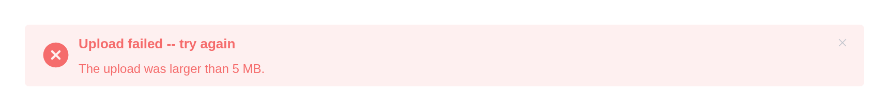
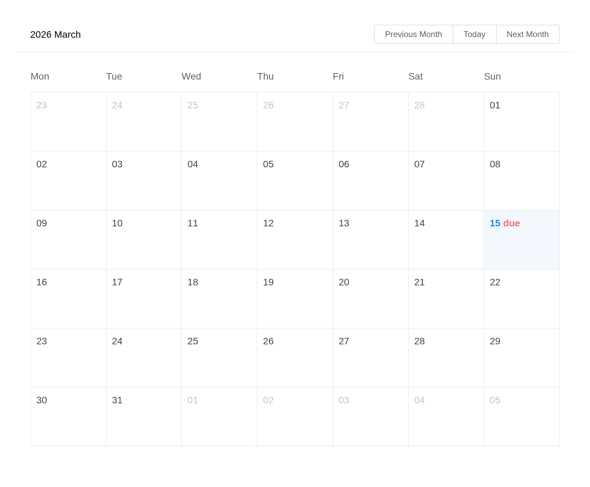
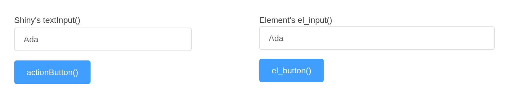
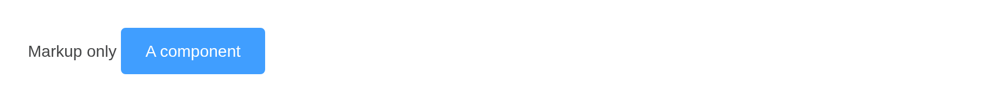
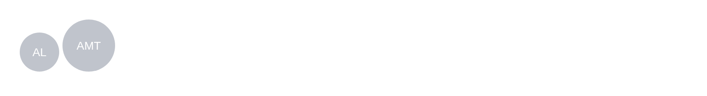

Everything Element UI 2.15.14 documents is wrapped: 83 components, 552 attributes, 94 events, 54 methods and 42 slots. What follows is the small print – the places where this package behaves differently from Element in a browser, and why.
Coverage is measured rather than claimed.
tools/api-coverage.R renders every component and reads the
markup back; tools/api-coverage.py compares that with the
API tables in Element’s own documentation.
Reading and writing a component
A component reports to input$<id>, on load as well
as on change:
ui <- el_page(
el_select("city", choices = c("Beijing", "Shanghai"), value = "Shanghai"),
verbatimTextOutput("picked")
)
server <- function(input, output, session) {
output$picked <- renderPrint(input$city)
}
shinyApp(ui, server)
Three separate channels reach back into it, and they do different things:
| Reaches | Example | |
|---|---|---|
update_el_*() |
the component’s props | update_el_select(session, "city", value = "Beijing") |
el_call() |
the component’s methods | el_call(session, "tbl", "clearSelection") |
update_vue_data() |
the Vue instance’s fields directly | update_vue_data(session, "tip", list(tipContent = "...")) |
update_el_*() cannot call a method, because it assigns
into the Vue instance’s data and a method is a function. That is what
el_call() is for. A method with a return value answers
asynchronously, as input$<id>_<method>:
ui <- el_page(
el_tree("tree", show_checkbox = TRUE, node_key = "id",
default_expand_all = TRUE, checked = c("b1", "c"),
data = list(
list(id = "a", label = "Fruit", children = list(
list(id = "b1", label = "Apple"), list(id = "b2", label = "Pear"))),
list(id = "c", label = "Bread")
)),
el_button("ask", "Which are checked?"),
verbatimTextOutput("answer")
)
server <- function(input, output, session) {
observeEvent(input$ask, el_call(session, "tree", "getCheckedKeys"))
output$answer <- renderPrint(input$tree_get_checked_keys)
}
shinyApp(ui, server)
Events are event inputs
Every forwarded Element event sets its input with event priority. The
input keeps its last value like any other; what event priority adds is
that sending the same value again still counts as a change. Clicking the
same row twice fires an observeEvent() twice – while an
output that only reads the value sees nothing new the second time.
Here is the same row clicked twice. The output reading the value shows where the last click landed; only the observer knows there were two:
ui <- el_page(
el_table("tbl", data = head(iris[, c(1, 5)], 3)),
verbatimTextOutput("polled"),
verbatimTextOutput("latched")
)
server <- function(input, output, session) {
# Reading the value: the last row clicked, but not how many times
output$polled <- renderText({
paste("last row clicked:", input$tbl_row_click$row_index)
})
# Observing the event: runs once per click, repeats included
clicks <- reactiveVal(0)
observeEvent(input$tbl_row_click, clicks(clicks() + 1))
output$latched <- renderText(paste("clicks seen:", clicks()))
}
shinyApp(ui, server)
An event whose arguments cannot cross the wire – a native
FocusEvent, a DOM node, a whole Vue instance – reports
TRUE instead, so an observer can still tell that it
happened.
Nesting components
Two kinds of component wrap other content, and they behave differently.
Containers are plain markup. el_row(),
el_col(), el_container(),
el_collapse(), el_tabs(),
el_dialog() and el_drawer() render Element’s
own CSS classes and drive their state through a Shiny input binding.
They hold anything, and what is inside keeps working as it would on its
own.
el_collapse("panels", value = "one", items = list(
list(name = "one", title = "Settings", content = tagList(
el_switch("dark", value = TRUE, active_text = "Dark mode"),
el_rate("stars", value = 4)
)),
list(name = "two", title = "About", content = tags$p("Version 0.1.0"))
))
Wrappers absorb what they are given.
el_tooltip(), el_popover(),
el_popconfirm() and el_infinite_scroll()
compile their content into their own Vue instance, so a component handed
to one is folded in rather than nested: the two become a single instance
carrying both sets of markup, data and methods.
ui <- el_page(
el_tooltip("hint", el_button("save", "Save", type = "primary"),
content = "Writes to disk", placement = "right"),
verbatimTextOutput("clicks")
)
server <- function(input, output, session) {
output$clicks <- renderPrint(input$save) # still reports
}
shinyApp(ui, server)
This costs one thing. An absorbed component has no widget of its own,
so HTMLWidgets.find() cannot reach it and its
update_el_*() stops working. Drive it through the wrapper
instead:
ui <- el_page(
el_tooltip("hint", el_button("save", "Save", type = "primary"),
content = "Writes to disk"),
el_button("busy", "Mark as saving")
)
server <- function(input, output, session) {
observeEvent(input$busy, {
# Not update_el_button(session, "save", ...): the button has no widget
# of its own any more. Its fields live on the tooltip.
update_vue_data(session, "hint", list(label = "Saving...", loading = TRUE))
})
}
shinyApp(ui, server)
If two absorbed components declare the same field – most declare a
label, a type and a disabled –
the second one’s fields are renamed on the way in
(el3_label), and the markup that names them is rewritten to
match. You only notice when reaching in with
update_vue_data(), where the renamed field is what to
set.
Slots
Every component takes slots, a named list:
el_alert("problem", type = "error", show_icon = TRUE,
description = "The upload was larger than 5 MB.",
slots = list(title = tags$span(tags$b("Upload failed"), " -- try again")))
A scoped slot – one where Element hands the template variables that
only exist while Vue renders – is written with template()
and passed through untouched:
el_calendar("cal", value = "2026-03-15", slots = list(
dateCell = template(
htmltools::HTML(paste0(
"<div>{{ data.day.slice(8) }}",
"<b v-if=\"data.day.slice(8) === '15'\" style=\"color:#F56C6C\">",
" due</b></div>")),
slot = "dateCell", scope = "{date, data}"
)
))
Filling a slot replaces what Element put there, default and all.
Element’s el-form-item error slot, for instance, wraps the
message in div.el-form-item__error; a template that renders
only the message loses the styling with it.
Sizing
width is accepted by every component and behaves like
the width of a Shiny input – "200px",
"50%", or a number meaning pixels. It lands on Element’s
own markup, because the host element carries
display: contents and generates no box of its own.
height is only where Element gives it a meaning:
el_table() fixes the header and scrolls the body,
el_slider() sizes a vertical track,
el_carousel() sets the frame. Element sizes controls
through size ("medium", "small",
"mini") rather than a height.
The page around the components
Element styles its components, not the page they sit on, and most of
its components set no font of their own – they inherit the page’s.
el_page() therefore themes the page too: its default,
el_theme(), is a bslib theme carrying Element’s blue,
greys, borders, corners, type size and font stack, so Shiny’s own inputs
and outputs match the Element ones beside them.
el_row(gutter = 16,
el_col(span = 12,
textInput("shiny_text", "Shiny's textInput()", "Ada"),
actionButton("shiny_go", "actionButton()", class = "btn-primary")),
el_col(span = 12,
tags$label("Element's el_input()"), el_input("el_text", value = "Ada"),
tags$div(style = "margin-top: 15px",
el_button("el_go", "el_button()", type = "primary"))))
el_theme(primary = "#7c3aed") changes the brand colour,
and any other argument of bslib::bs_theme() or Bootstrap
variable can be overridden the same way. Element’s own components keep
Element’s colours whatever the theme says: they are compiled into its
stylesheet, and changing them means building a custom Element theme.
Element’s own markup
el holds a generator for every Element tag, for markup
that needs no Vue instance of its own:
el$button(type = "primary", "Markup only") # no input
el_button("save", "A component", type = "primary") # reports input$save
Use the raw tag where a component would be wasted – inside a
template(), or as a wrapper’s trigger when you do not need
to know it was clicked.
Building your own
el_widget() assembles a component the way this package
assembles its own, and is exported for wrapping anything not covered
here, or covered differently:
initials <- function(id, name, size = 48) {
el_widget(
id = id,
markup = el$avatar(":size" = "size", "{{ letters }}"),
data = list(size = size, letters = paste(substr(strsplit(name, " ")[[1]], 1, 1),
collapse = "")),
dependency = element_ui_dependency()
)
}
initials("ada", "Ada Lovelace")
initials("alan", "Alan Mathison Turing", size = 64)
Calling vueR::vue() yourself works too. What
el_widget() carries, and what is then yours to remember, is
display: contents on the host, a zero-sized widget element,
and the el selector – each of which is there because of a
bug.
Where the argument name differs from Element’s
Arguments are snake_case versions of Element’s prop names, with six
exceptions. Each is deliberate; the rest translate mechanically
(show-overflow-tooltip becomes
show_overflow_tooltip).
| Element | Here | Why |
|---|---|---|
default-active |
active |
It is the current item, and update_el_menu() changes it
– “default” would suggest it is only read once |
default-expanded-keys |
expanded |
As above, for el_tree()
|
default-checked-keys |
checked |
As above |
props |
label_field, children_field,
disabled_field, is_leaf_field
|
el_tree()’s field map is four arguments rather than a
nested list |
data (upload) |
extra_data |
el_upload()’s data would read as the file,
not the fields sent beside it |
width (popover) |
popover_width |
Every component takes width for its own size; this one
sizes the card |
A component’s value prop is its v-model, so
it is the value argument where the component has one and
the binding elsewhere – el_tooltip() and
el_popover() use value for whether they are
open, which update_el_*(value =) sets.
el_upload()’s on-success,
on-error and http-request are taken: they are
how files reach Shiny. The other hooks (on-change,
on-progress, before-upload, …) are yours.
Where a name does differ, the component’s help page documents both.
Known gaps
Three attributes are deliberately unbound.
value on el-checkbox and
el-radio, which a group owns through v-model,
and the deprecated auto-complete spellings on
el-select and el-input, which upstream marks
@DEPRECATED beside the autocomplete this
package binds. They are listed in tools/api-coverage.py
with the reason.
Element’s i18n covers the component text, not yours.
el_page(locale =) switches Element’s own strings – a date
picker’s month names, a table’s “No Data”. Text you pass in is yours to
translate.
A component inside a renderUI() is re-created,
not updated. That is Shiny’s behaviour rather than this
package’s, but it matters more here: the new instance starts from its
arguments, so anything the user had changed is lost. Prefer
update_el_*() where you can.